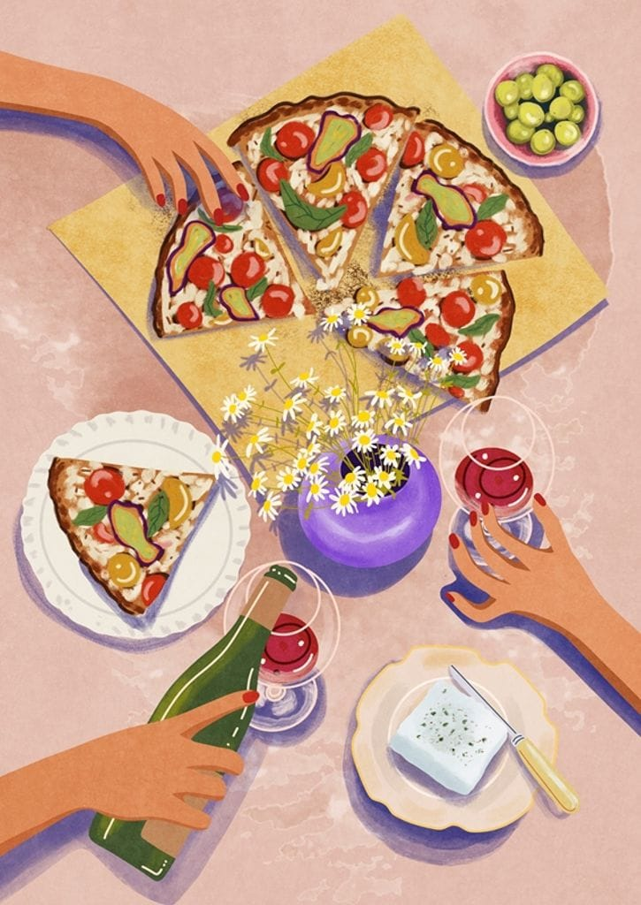
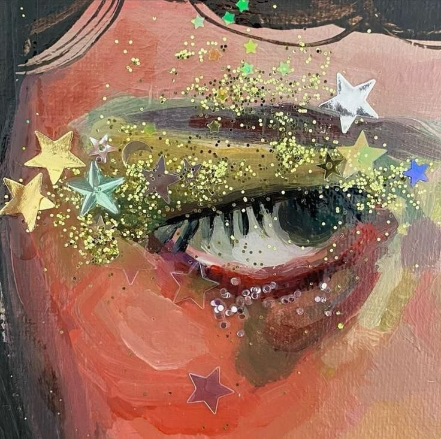

10 august 2026a theory
Why does food taste better when somebody else orders it
I’ve ordered the exact same thing later, on my own, and it
wasn’t the same. Something was missing.
read it
You look at the menu for ten minutes. You think about it properly. You decide, and you’re happy with your decision.
Then it arrives. And theirs arrives. And you take one bite of theirs and suddenly yours is just… fine. Not bad. Just not that.
And it’s not even about the food. I’ve ordered the exact same thing later, on my own, and it wasn’t the same. Same dish, same place, same everything. Something was missing and I couldn’t tell you what.
I think a bite off someone else’s plate was never really about the food. It’s someone going here, try this, before you even asked. It’s being thought about for two seconds while somebody else is eating.
That’s the bit that tastes better. We just blame the food.

10 august 2026endings
The last day of something nobody told us was the last day
The big endings come with a warning. Most things just stop, and
you find out months later, by accident.
read it
There was a last time my dad picked me up and carried me. Neither of us knew it was the last time. It just stopped happening one day and nobody said anything about it.
There was a last day all of us were in the same room. We spent most of it complaining about the heat.
That’s the thing about endings. The big ones come with a warning. Last day of school, last exam, last shift. Everyone gets sad on purpose and somebody takes a photo.
But most things don’t end like that. They just stop. And you find out months later, randomly, when you notice how long it’s been.
I think that’s why I take so many photos of nothing. Not because any of it matters. Because I can’t tell yet which normal Tuesday was the last one.
10 august 2026goodbyes
Why is saying bye three times never enough
I only do it with certain people. With everyone else it’s
one bye and I’m out the door.
read it
The call ends three times. Bye. Okay bye. See you. And then neither of us has actually pressed anything, so there’s a fourth one, and that one is just panic.
Doorways are worse. The conversation ended eleven minutes ago and we’re both still standing half inside a house going anyway. Anyway. Right. Anyway.
For ages I thought this was just me being bad at leaving. But I’ve noticed I only do it with some people. With everyone else it’s one bye and I’m out the door.
So maybe it’s not awkwardness. Maybe it’s just not wanting to be the one who ends it.
Three byes isn’t indecision. It’s three chances to not go yet.
10 august 2026the honest one
The economics of saying it’s fine
After a while people stop asking, because you’ve convinced
them you’re okay so many times.
read it
“Are you okay?”
“Yeah, I’m fine.”
We say this so casually. Like it’s nothing. And sometimes it is nothing. Sometimes we’re actually fine.
But sometimes “fine” means I don’t wanna talk about it, or I don’t even know what’s wrong, or I know what’s wrong but explaining it rn feels like too much work.
And honestly, I get it. Not every bad day needs a 3-hour conversation and a whole emotional breakdown. Sometimes you just wanna say “fine” and move on.
But I think we’ve gotten a little too comfortable with that word. We say it when we’re tired, when we’re hurt, when we’re annoyed, when we miss someone, when we just feel… off. And after a while, people stop asking because you’ve convinced them you’re okay so many times.
Maybe we don’t always need to explain everything. But having even one person you can text “actually, I’m not fine today” without feeling guilty about it? That’s kinda important.
Because sometimes you don’t need advice.
You just need to stop saying “fine” when you don’t mean it.